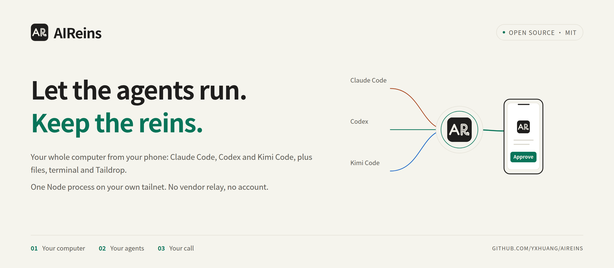
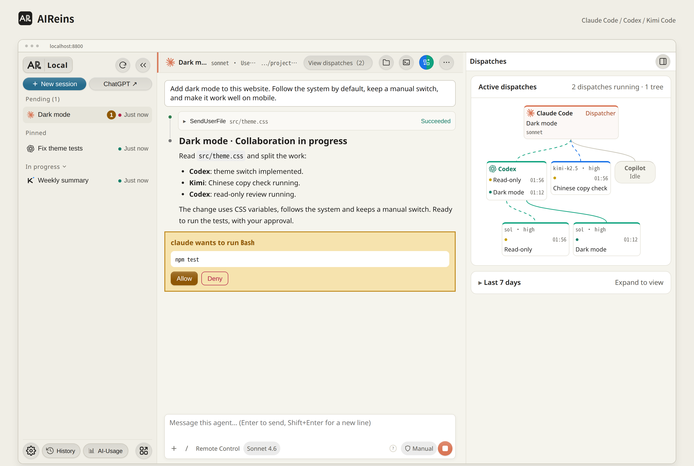
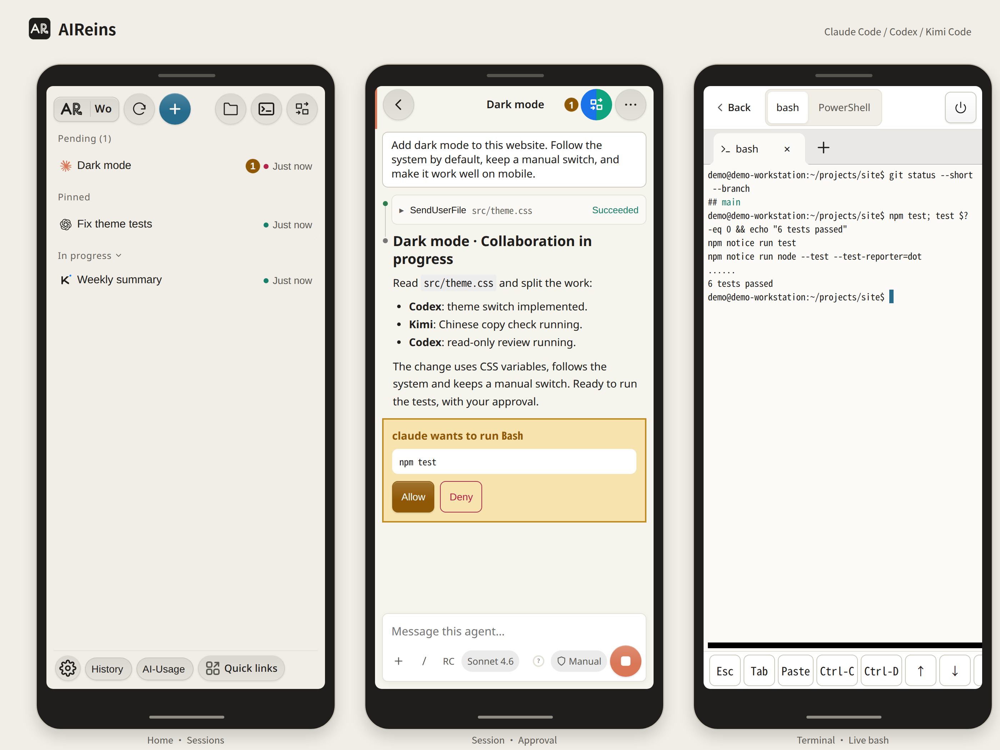
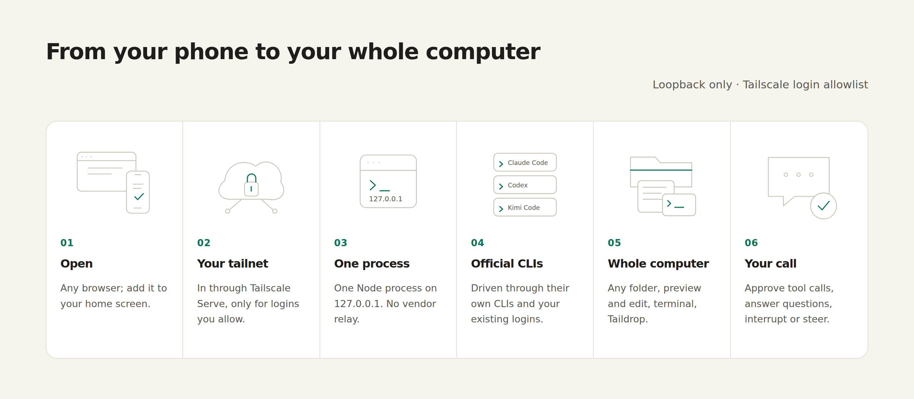

Your setup comes with you.
Official CLIs, existing logins. Your instructions, skills, hooks, MCP servers and plugins load as usual. Nothing to migrate.
Your AI workbench, on your own computer. Use Claude Code, Codex and Kimi Code from a browser on your desktop or phone.

Keep the tools you already use. Bring the work into one place.
Official CLIs, existing logins. Your instructions, skills, hooks, MCP servers and plugins load as usual. Nothing to migrate.
Approve or deny tool calls, answer questions and interrupt a run. Everything waiting on you, across all sessions, is collected in one place.
Search, filter by folder and resume the native history of all three CLIs. Sessions stay in each CLI’s own history.
Sessions together, approvals in view, sub-agents in a tree. Files and a multi-tab terminal are right at hand.

Connect back over Tailscale. Approve a tool call, answer a question or browse your files, all from your phone.
Add it to your home screen to open it like an app. The remote terminal is off by default; enable it when you need it.

Screenshots from a local instance running on demo data; the sessions and paths are made up.
One Node process. The official CLIs. Your existing logins.

On the same computer, your browser connects directly to loopback. From another device, join your tailnet: Tailscale Serve forwards to AIReins’ remote entry, which checks Host/Origin and allows only the Tailscale logins you approve. The local Node process drives the official CLIs and writes sessions to their own history.
This is access to your whole computer.
Anyone who can reach AIReins has the power of your user account on that machine.
Read Security in the READMEInstallation, prerequisites and remote setup are in the README.
Windows + WSL2 and native Linux supported. macOS is experimental, with CI coverage only.